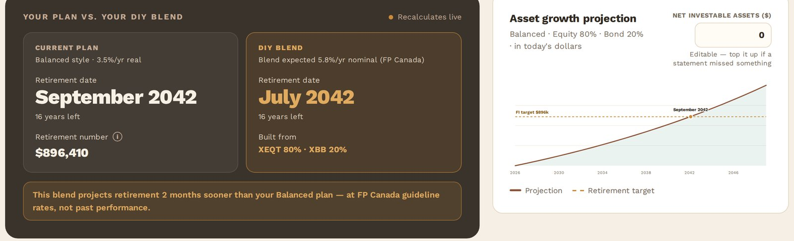

Case 01 · Grove · personal finance hub
Bank statements in.
A retirement date out.
A privacy-first personal finance hub. Drop in a few months of statements and it works out what you actually spend, then projects the date you could stop working. The raw statements are never stored.
- Role — sole author
- May → Aug 2026
- React · FastAPI · Supabase · Gemini
The problem
Every retirement calculator asks what you spend a month. Nobody knows what they spend a month.
The honest answer is buried in a year of statements spread across four institutions, in four different CSV and PDF layouts, none of which agree on what a column is. So people estimate, put the estimate in a spreadsheet, and get a retirement date accurate to about the nearest decade. The number that matters most is the one nobody checks.
The flow
Four steps, and the model only owns the one that genuinely needs judgment.
STATEMENTS ──▶ PARSE ──────▶ EXTRACT ─────▶ REVIEW ────▶ PROJECT csv · pdf pdfplumber Gemini 3.1 you edit hand-built txt · image + vision Flash Lite the table SVG charts
Parsing is deterministic wherever it can be — dedicated readers for TD, CIBC, RBC and Scotiabank — and a model runs only where a layout defeats them. What the model returns is a proposal, not a verdict: the category table is editable, it runs entirely client-side, and nothing counts until you confirm it.
That boundary is also the privacy story. Raw files and transaction text are never stored, the review step never leaves the browser, and what persists is a summary behind Supabase Auth with Vault encryption.
Charts worth hand-building
A projection is one line, one target, and the point where they cross. That is not a charting-library problem.

The growth and trend charts are hand-written SVG. Owning the geometry is less code than bending a library into the shape of a crossing point, and it means the one moment that matters — the year the line meets the number — can be drawn deliberately instead of configured around.
Why every change ships with tests
AI wrote a lot of this. That is precisely the argument for a strict test policy, not against one.
When generated code arrives faster than anyone can read it line by line, review quietly stops being the quality gate. Something else has to be. So every change ships with tests: 25 of them across the frontend lib, the FastAPI service, the statement parsers, and a Playwright journey that drives the whole upload-to-projection path — all gated in CI.
It is the same instinct as the substrate in case 02. Decide the rule once, write it down, then make something other than my own attention responsible for holding it.